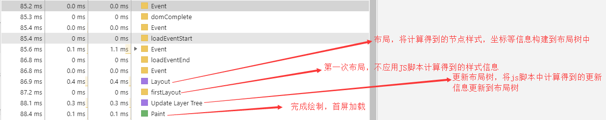
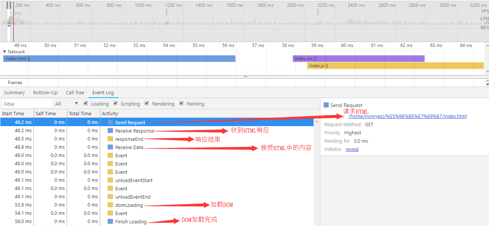
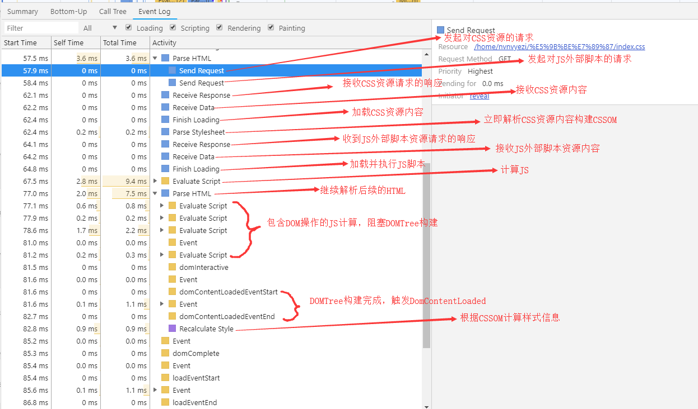
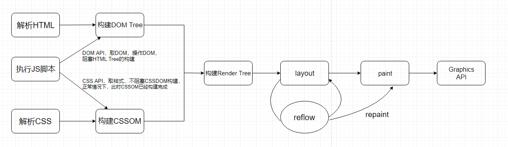

首先，本文只是对我对浏览器渲染机制这块之前的纠结点做一整理和总结，不会面面俱到，我会的一句代过，不清楚的我会特地作说明。本文的所有结论都是基于控制台的 performance 下的主线程分析~
关于关键渲染路径
关键渲染路径可以理解为浏览器从加载 HTML 文档到完成首屏渲染的过程中必须要经过的步骤，具体就是浏览器收到 HTML、CSS 和 JavaScript 等资源并对其进行处理从而渲染出 Web 页面，关键路径的长度指获取所有阻塞资源（关键资源：比如说样式文件，脚本文件）所需的往返次数，也就是说，第一次 paint 之后紧接着就是 load 完成，到这里，就算首屏渲染完毕。
关于外部资源请求与加载（响应）
CSS 资源和 JS 脚本是在开始解析 HTML 之后由浏览器的 Render 进程下的网络请求线程处理的，两者并行发起请求，但是浏览器会默认 JS 是依赖于 CSS 的（因为 JS 中可能会有操作 DOM 修改样式的代码，避免重绘），所以，CSS 的请求一定会先响应（默认情况下，不给 link 设置 media 属性的情况下）。
关于 CSS 被视为阻塞渲染的资源
默认情况下，CSS 会被视为阻塞渲染的资源，也就意味着在 CSSOM 构建完成前浏览器将不渲染其他已处理的内容。当存在阻塞的 CSS 资源时，浏览器会延迟 JavaScript 的执行和 DOM 的构建。CSSOM 构建时，JS 会暂停执行。
关于 JS 被视为阻塞 DOMTree 构建的资源
浏览器遇到
<script>标签时，DOM Tree 构建将暂停，HTML 解析器虽然会停止构建 DOM，但仍会识别该脚本后面的资源，并进行预加载。
综上
实际使用的时候在引用顺序上会让 CSS 资源优先于 JavaScript 资源引入。尽早在 HTML 文档内指定所有 CSS 资源，以便浏览器尽早发现 link 标记并尽早发出 CSS 请求。
整体流程

1. 请求/响应 HTML

2. 解析 HTML->解析 CSS->执行 JS 脚本->Layout->Paint

